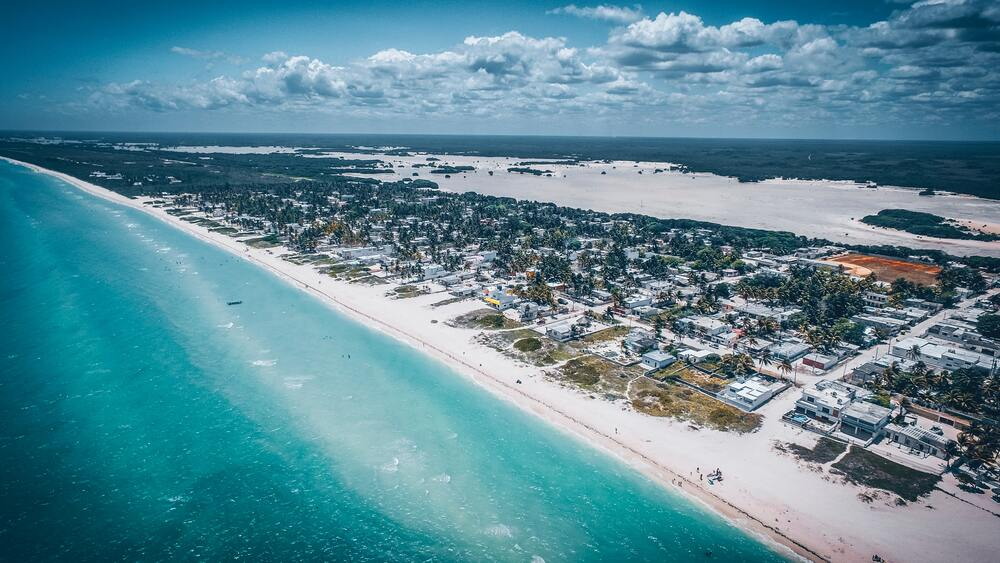
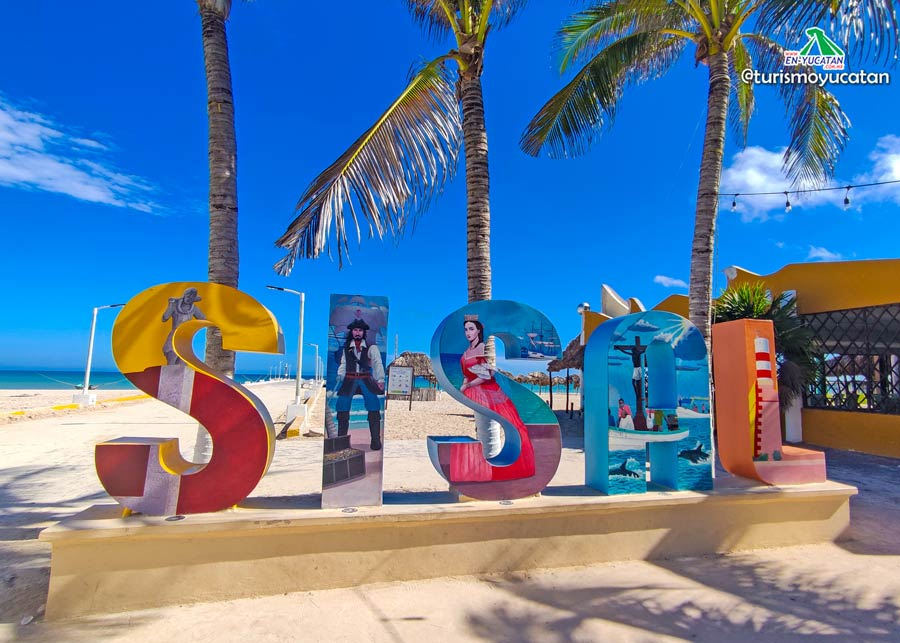

Sisal, Yucatán

El puerto de Sisal fue uno de los más importantes en la época de la
colonia, la comercialización de las fibras de henequén, algodón, tabaco
hacia el viejo continente, lo constituía como un punto de encuentro de
diversas culturas en - Se encuentra dentro de la Reserva Estatal El
Palmar. La reserva es un sitio RAMSAR y una zona de influencia del
Corredor Biológico Mesoamericano. - Su zona de humedales es hábitat de
una colonia considerable del flamenco rosa.
Características:
En el litoral norponiente de Yucatán se dibuja el pueblo de Sisal.
Escribe su historia como puerto comercial en la época de la Colonia y
hoy se distingue por pertenecer a una zona de gran influencia biológica
para el Caribe. El visitante que pisa su blanca arena queda prendado
como le sucediera hace años a Carlota, la emperatriz. La vida aquí pasa
entre paseos en lancha para explorar lo que la naturaleza tuvo bien
regalarle a Sisal.

Atractivos:

Recorridos por manglares y avistamiento de cocodrilos
Muelle de Sisal
Cocina yucateca
Fuerte de Santiago y su Faro
Ex Aduana Marítima
Reserva Estatal El Palmar
Casa de la Emperatriz Carlota
Festividades:
Fiesta en honor al Cristo Negro - 25 de agosto el puerto de Sisal se
llena de lanchas que en forma de peregrinación transportan al Cristo
Negro de la iglesia de Hunucmá a este Pueblo Mágico. Los feligreses
llevan arreglos florales que dejarán en el mar, mientras rezan y
agradecen al Cristo por la fructífera recolección. Este acto de fe se
realiza desde hace más de 60 años.
Festival de la veda del mero - Con motivo de la veda de este pez a
principios de febrero, la comunidad pesquera de Sisal se guarda de
capturar peces para dedicarse a la actividad turística: paseos en
lancha, paseos a caballo, recorridos turísticos y otras actividades.
Ubicación:
Región Noroeste de la Península de Yucatán. Se encuentra a 70
kilómetros de Mérida, Yucatán y se puede llegar por la carretera
YUC 281. El recorrido aproximado entre la Ciudad de Mérida y Sisal es
de 1 hora 20 minutos
.